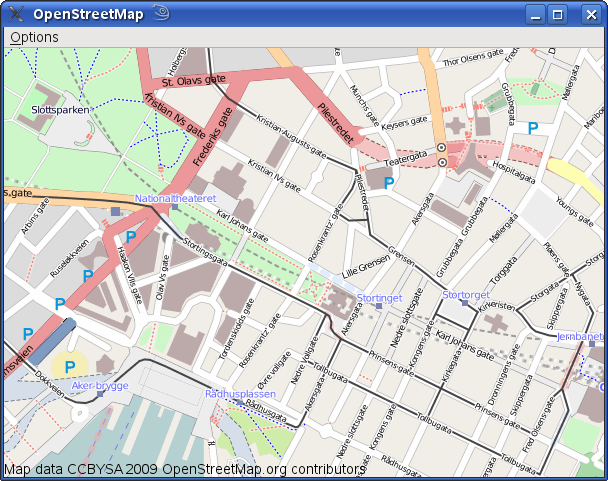

|
Home · All Classes · All Functions · | |
Files:
This demo shows a lookup of the local street map based on the users location as determined by GPS. If no GPS is detected a default location is selected. Also from the Options menu the user can select a sample city. There is also an option to select night view.

| Copyright © 2010 Nokia Corporation and/or its subsidiary(-ies) | Trademarks | Qt Mobility Project 1.0.2 |